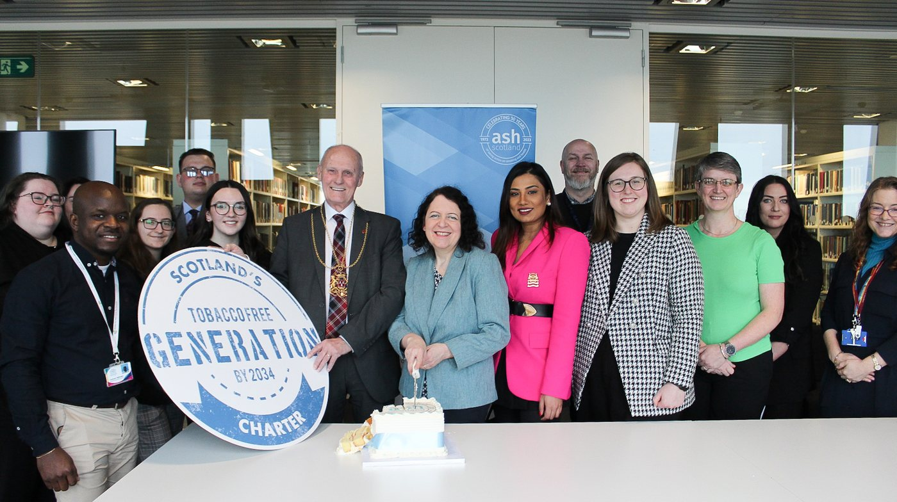

News · February 2024
Celebrating the 50th Anniversary of ASH Scotland in Aberdeen

We celebrated the 50th anniversary of ASH Scotland and showcased the health charity’s collaborative work with the University of Aberdeen and in the city’s communities with Scotland’s Charter for a Tobacco-free Generation supporters and NHS Grampian’s Quit Your Way smoking cessation service, to raise awareness about the harms associated with tobacco and related products, and the support available.
We were joined by:
- Maggie Chapman MSP (North East Scotland)
- Lord Provost of Aberdeen, Councillor David Cameron
- Councillor Jennifer Bonsell, Member of the Integrated Joint Board for Aberdeen City Health and Social Care Partnership
- Councillor Miranda Radley, Reserve Member of the Integrated Joint Board for Aberdeen City Health and Social Care Partnership
- Councillor Deena Tissera, Member of Aberdeen City Council’s Anti-Poverty and Inequality Committee